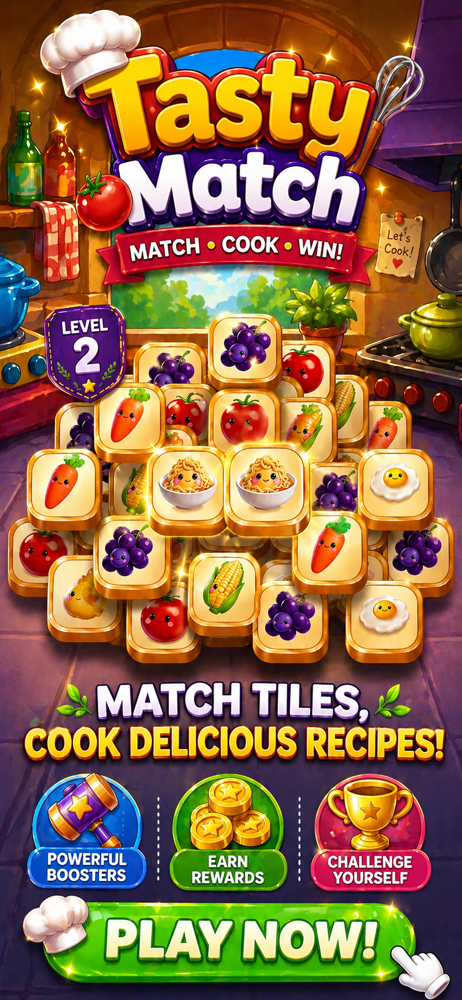
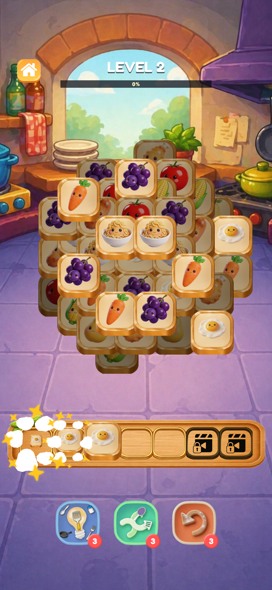
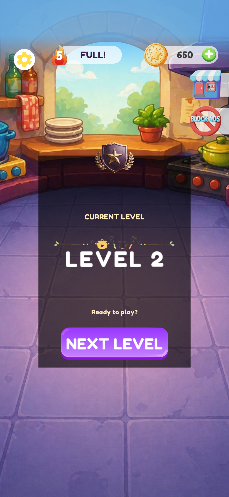
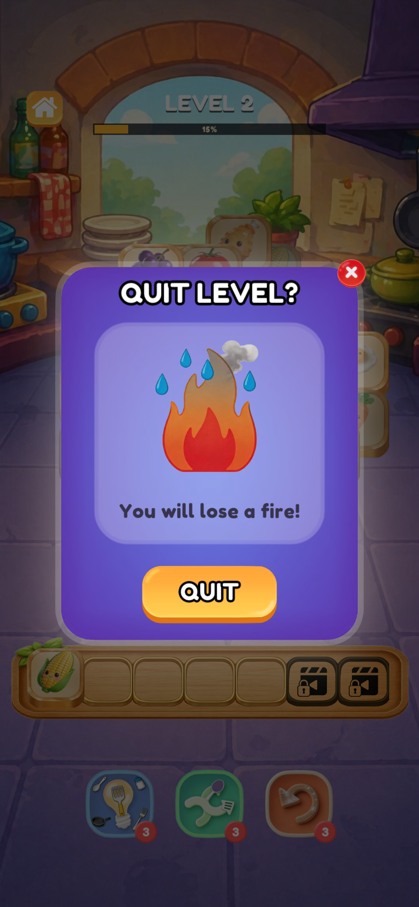

Readable moment-to-moment gameplay
Players can quickly understand the board state, object variety, and available boosters from a single glance.
Tasty Match blends adorable food characters, quick puzzle sessions, and a warm kitchen world into a game that feels easy to enter and hard to put down.
The presentation now puts the game first: what it feels like, what players can expect, and where they can get support without digging through legal pages.
Players can quickly understand the board state, object variety, and available boosters from a single glance.
The orange-gold palette, glossy food assets, and kitchen setting establish a more distinct brand than a plain policy landing page.
Contact, support, privacy, and data deletion are all still easy to reach, but they no longer dominate the first impression.
These in-game screens show the progression from playful onboarding to actual matching interaction and level states.




Reach Damien Studio directly for gameplay issues, device compatibility questions, or account-related requests.
Privacy policy, terms of use, contact details, and data deletion information are available in a consistent site layout.